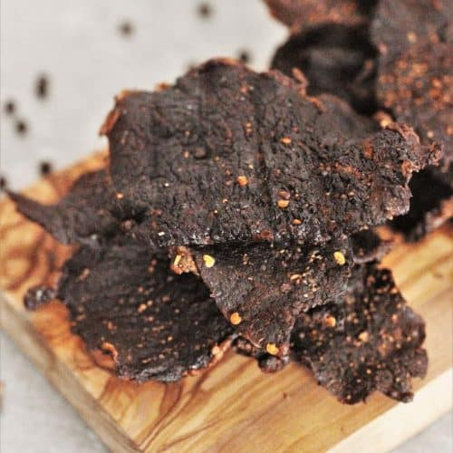

Beef Jerky

Description
Homemade beef jerky, in homemade marinade, dehydrated at home, with your very own spices. Make beef jerky to your own preferences, at a much lower cost than what you can find in any store!
Ingredients
Beef Jerky:
- Beef round steak: 2 lbs (cut into thin strips)
Marinade:
- Soy sauce: 1/4 cup
- Worcestershire sauce: 2 Tbsp
- Liquid smoke: 2 Tbsp
- Brown sugar: 2 Tbsp
- Salt: 2 tsp
- Ground black pepper: 1 tsp
- Meat tenderizer: 1 tsp
- Garlic powder: 1 tsp
- Onion powder: 1 tsp
- Ground paprika: 1 tsp
Steps
-
Gather all ingredients.
-
Prepare the marinade: Combine soy sauce, Worcestershire sauce, liquid smoke, brown sugar, salt, pepper, meat tenderizer, garlic powder, onion powder, and paprika in a glass bowl.
-
Place beef strips in a 9x13-inch glass baking dish. Pour marinade over top; toss until evenly coated. Cover and marinate in the refrigerator for 8 hours or overnight.
-
Remove beef strips from the bowl and place between two pieces of plastic wrap; pound to 1/8-inch thickness.
-
Arrange pounded beef strips in a single layer on the trays of a dehydrator. Dry at the dehydrator's highest setting until jerky is done to your liking, at least 4 hours.